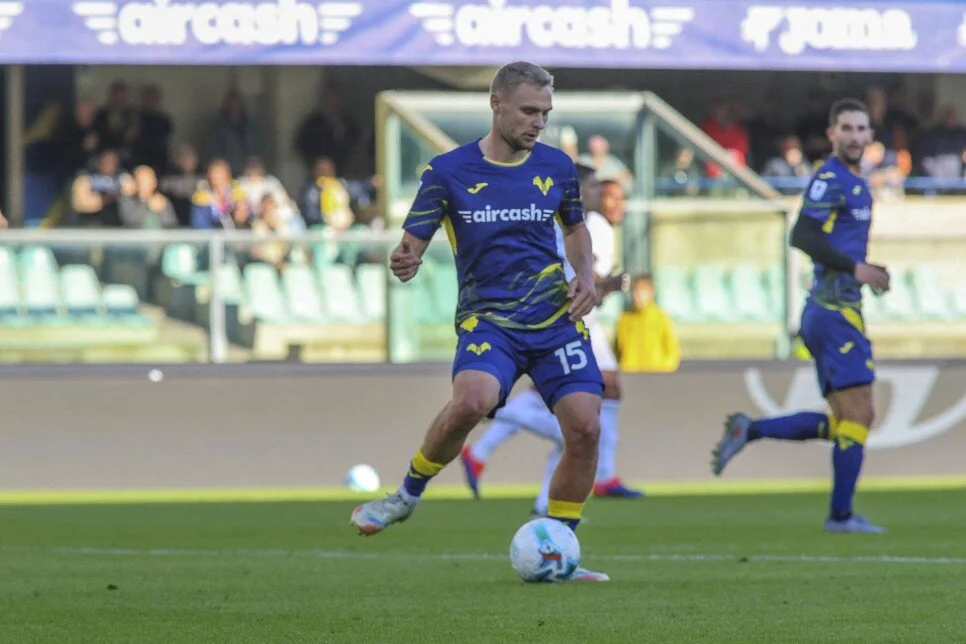

İtalya'da **Nelsson'a Kötü Haber!**
Yayınlanma Tarihi: 05 Aralık 2025
>İtalya'dan Gelen Soğuk Duş: Nelsson Transferi Askıda!
Galatasaray'ın Danimarkalı başarılı stoperi Victor Nelsson, yaz transfer döneminden bu yana Avrupa devlerinin radarına takılmıştı. Özellikle İtalya Serie A'nın önde gelen kulüpleri, 27 yaşındaki savunmacıyı kadrolarına katmak için temaslarını sıklaştırmıştı. Ancak son gelen haberler, sarı-kırmızılı camiada bir yandan rahatlama yaratırken, diğer yandan da oyuncunun Avrupa hayalini bir süreliğine ertelemiş oldu.
Italyan medyasında yer alan haberlere göre, başta Napoli ve Milan olmak üzere Nelsson ile ilgilenen kulüpler, Galatasaray yönetiminin belirlediği bonservis beklentisini yüksek buldu. Galatasaray'ın, Nelsson için kapıyı 20 milyon Euro'dan açtığı, İtalyan kulüplerinin ise bu rakamı, kulüplerin mevcut finansal kısıtlamaları ve FFP (Finansal Fair Play) gereklilikleri nedeniyle karşılamakta zorlandığı öğrenildi. Serie A kulüpleri, genelde 15-18 milyon Euro bandında kalmak isterken, Galatasaray yönetimi, Nelsson'un yaşını, istikrarını ve potansiyelini göz önüne alarak taviz vermedi.
Victor Nelsson'un menajeri, transferdeki son durum hakkında önemli açıklamalarda bulundu. Menajer, Avrupa defterinin tamamen kapanmadığını ancak an itibarıyla bütçe konusunda tıkanıklık yaşandığını doğruladı. Menajerin açıklaması: "İtalyan kulüpleriyle görüşmelerimiz devam ediyor ancak bütçe konusunda anlaşmaya varılamadı. Onların koyduğu limitler ile Galatasaray'ın beklentisi arasında ciddi bir fark var. Oyuncumuzun önümüzdeki sezonda da Galatasaray forması giyme ihtimali oldukça yüksek. Her ne kadar Avrupa, Victor'un uzun vadedeki hedefi olsa da, Galatasaray'da mutlu ve şampiyonluk hedefiyle motive." Bu açıklama, Nelsson'un ocak ayında ayrılma ihtimalinin oldukça düştüğünü gösterirken, transferin yaz aylarına veya bonservis beklentisinin düşürülmesine bağlı olarak gelecek sezonlara kaldığını işaret ediyor.